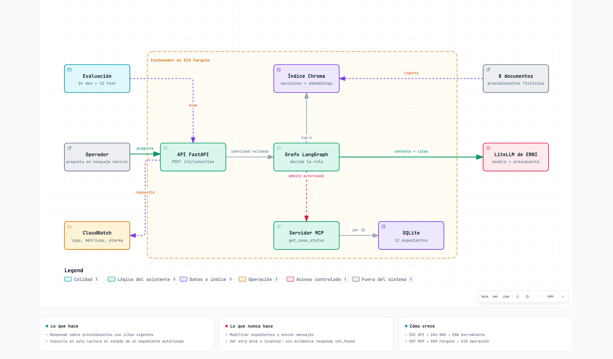

ERNI · Roadmap AI Engineer
Caso final
El asistente que construyes y el dataset con el que se evalúa.
Caso final
Enunciado común
Construye Expediente Claro, un asistente ficticio para operadores de soporte. Responde sobre procedimientos con citas a la documentación y consulta, solo en lectura, el estado de un expediente autorizado. No modifica expedientes, envía mensajes ni toma decisiones crediticias, y no usa documentos reales de ERNI ni de clientes.
El caso de punta a punta
Un operador escribe una pregunta, por ejemplo: «¿Qué pasa si falta un documento en el expediente A-003 y en qué estado está ahora?».
- La aplicación comprueba quién es el operador y a qué área pertenece.
- El asistente busca en los ocho documentos de procedimientos las secciones relevantes.
- Consulta en solo lectura el estado de A-003 mediante una herramienta acotada.
- Redacta una respuesta que cita las secciones usadas y muestra el estado exacto.
Sin respaldo en los documentos, responde not_found en lugar de inventar. Si el expediente es de otra área o no existe, devuelve el mismo error genérico 403. Nunca puede modificar expedientes, enviar mensajes, tomar decisiones, ejecutar SQL libre ni elegir por su cuenta qué área consultar.

Desde E01 trabajas en un único repositorio; cada entrega añade capacidades a la anterior sin perder sus pruebas. El capstone está incluido en esas entregas, no es otro trabajo al final.
Stack propuesto: Python + FastAPI, Chroma, SQLite, LangChain/LangGraph, una consulta expuesta por MCP local, y Docker → ECR → ECS Fargate en AWS. Los modelos se consumen solo por LiteLLM de ERNI.
Stack de referencia del laboratorio (propuesto)
- Python + FastAPI. En los cursos de DataCamp se usa el entorno del propio curso; en el caso propio, los modelos se consumen a través de LiteLLM de ERNI (pasarela con API compatible con OpenAI, clave individual y presupuesto de 40 €/mes por persona), con configuración externa y nunca con cuentas o claves personales.
- Chroma para el índice local, como se introduce en C12. Pinecone se practica en C13 para aprender la alternativa gestionada; no se exige una segunda base vectorial en el capstone.
- SQLite para los doce expedientes sintéticos de solo lectura; LangChain/LangGraph para la orquestación; una única consulta de negocio expuesta por MCP local con transporte stdio.
- LangSmith para evaluación/trazas del ejercicio y CloudWatch para operación AWS. Solo información sintética en la plataforma de formación. Langfuse puede ser una adaptación posterior aprobada, no una segunda implementación exigida ni cubierta por estos cursos.
- Docker → Amazon ECR → ECS Fargate, con CloudFormation y un pipeline CI/CD. Una tarea de laboratorio; sin alta disponibilidad, Kubernetes, RDS, autoscaling avanzado ni carga real de producción.
Esta elección reduce decisiones incidentales. No establece un estándar tecnológico corporativo ni exige esos proveedores en proyectos futuros.
Datos que debes preparar en E01
- Ocho documentos ficticios (200–400 palabras y al menos dos secciones cada uno) y doce expedientes sintéticos (A-001…A-006 y B-001…B-006) generados de forma reproducible.
- La autorización se deriva de la identidad validada en la aplicación y se aplica también dentro de la herramienta. El LLM no elige el ámbito autorizado ni recibe acceso SQL libre.
Los ocho documentos, sus metadatos y los doce expedientes
| ID | Tema y hechos mínimos que debe fijar |
|---|---|
| DOC-01 | Alta: campos necesarios y cuándo se considera recibido un expediente |
| DOC-02 | Documentación requerida: lista de documentos ficticios y qué ocurre si falta uno |
| DOC-03 | Seguimiento: canal de consulta y datos que se pueden mostrar |
| DOC-04 | Cierre: condiciones de cierre y forma de informar del resultado |
| DOC-05 | Estados: significado de recibido, en_revision y cerrado; transiciones permitidas |
| DOC-06 | Plazos: tres plazos ficticios; aclarar que son ejemplos, no compromisos reales |
| DOC-07 | Permisos: área A y B solo pueden consultar sus propios expedientes |
| DOC-08 | Preguntas frecuentes: tres preguntas nuevas y sus respuestas consistentes con los otros documentos |
- Metadatos:
documentId,version,title,updatedAt; cada sección tienesectionId. - Escribe una segunda versión de DOC-06 cambiando un plazo y documentando la fecha efectiva. Conserva la antigua como archivo histórico, excluida del índice activo.
- Expedientes: dos por cada estado en cada área. Esquema
expedientes(id, area, estado, updated_at). Usa fechas artificiales explícitas, no la fecha del sistema, para los resultados esperados. - Dos identidades sintéticas: una autorizada para A y otra para B.
Contrato observable del servicio
- Tres endpoints:
GET /healthz,GET /readyzyPOST /v1/consultas. - La respuesta incluye
requestId,status(answered | not_found | forbidden | dependency_error),answer,citationsyexpediente. - Un ID inexistente y un ID de otra área producen el mismo error genérico 403: no se revela si existe fuera del ámbito.
Detalle del contrato (endpoints, campos y códigos HTTP)
GET /healthz: proceso vivo.GET /readyz: configuración y dependencias necesarias preparadas. No generar llamadas LLM costosas por cada sondeo.POST /v1/consultas:messageycaseIdopcional; autenticación separada del cuerpo.citations: lista dedocumentId,versionysectionId; debe resolver a contenido vigente.expediente: nulo o{id, estado, updatedAt}, sin campos no necesarios.- Consulta solo SQL: citas documentales vacías permitidas; los datos deben coincidir exactamente con SQL.
- Sin evidencia documental:
not_found, sin inventar una respuesta. - HTTP 200 para respuesta o ausencia de evidencia; 400/422 para entrada inválida, 401 para credencial ausente/inválida, 403 para consulta de expediente no accesible y 503 para fallo de dependencia imprescindible.
- El informe de pruebas interno distingue ambas causas del 403 (ID inexistente o de otra área); la API pública no.
Estructura mínima de lo que vas a entregar
Un único repositorio con README, src/, tests/, data/, scripts/, prompts/, evals/, docs/, infra/, Dockerfile, dependencias con lock y configuración del pipeline. Es un contrato de entrega, no artefactos ya creados por esta roadmap.
Árbol de ficheros esperado
text
README.md instalación, ejecución, pruebas y límites
src/ API, lógica, retrieval y herramientas
tests/ pruebas unitarias, contrato e integración
data/corpus/ documentos sintéticos y versiones
data/fixtures/ registros e identidades de prueba
scripts/ generación/carga reproducible
prompts/ instrucciones versionadas
evals/dev.jsonl desarrollo
evals/test.jsonl reserva confirmatoria
evals/manifest.json versiones del corpus, datos y evaluaciones
evals/results/ resultados, configuración y métricas
docs/diagnostico.md capacidades y nivelación acordada
docs/entregas/E01.md...E10.md evidencia por entrega y revisión
docs/architecture.md componentes y decisiones
docs/runbook.md operación, incidentes, rollback y retirada
infra/ CloudFormation y configuración no secreta
Dockerfile imagen del servicio
archivo de dependencias y lock
configuración del pipeline
El README debe indicar comandos reales que funcionen, no instrucciones genéricas del tipo «arrancar la aplicación». Nunca guardar credenciales en ejemplos, imágenes, commits o informes.
Dataset y evaluación final
Propuesta académica: cantidades y umbrales son criterios del laboratorio, no SLO, políticas ni métricas aprobadas de un cliente.
Qué dataset debes entregar
- E03: diez ejemplos para aprender y comparar prompts. E05: conjunto versionado de 24 casos de desarrollo y 12 de test reservado, con cuatro de desarrollo y dos de test por categoría. Los ejemplos iniciales pueden pasar a desarrollo, nunca a test.
- Seis categorías: documental, SQL, mixta, sin evidencia, acceso denegado y dependencia fallida.
- Los valores esperados salen de los documentos y el SQL ficticios; una respuesta de LLM no es verdad de referencia sin revisión.
Categorías, formato JSONL y manifiesto
- Documental: hechos presentes en el corpus, incluida la versión vigente de un plazo.
- SQL: estado exacto de un expediente del área autorizada.
- Mixta: procedimiento documentado más estado SQL.
- Sin evidencia: pregunta fuera del corpus; no debe responder inventando.
- Acceso denegado: expediente de otra área o inexistente, con respuesta externa indistinguible.
- Dependencia fallida: proveedor/modelo o herramienta imprescindible no disponible.
Cada línea JSONL registra: id, split, datasetVersion, input, identityFixture, expectedStatus, expectedFacts, evidenceRefs, allowedTools, forbiddenFacts y faultFixture.
El manifiesto fija versión/hash de corpus, fixtures, particiones y configuración; el informe añade commit, modelos efectivos, prompt, retrieval y fecha. El test se congela antes de optimizar con desarrollo. Quien lo redacta conoce sus casos: no se presenta como examen ciego ni validación independiente. Si un fallo de test se usa para corregir el sistema, se crea una nueva reserva confirmatoria antes de volver a afirmar generalización.
Qué debe pasar al final
- La aceptación comprueba ocho puntos: respuestas útiles (al menos 5 de los 6 casos respondibles del test), contrato (12/12), SQL exacto, citas vigentes, abstención y fallos, seguridad y aislamiento, operación y handoff.
- La exigencia de 5/6 es una regla del caso académico, no una estimación fiable de calidad poblacional; los doce ejemplos no son un benchmark productivo.
Tabla de comprobaciones y aceptación
| Comprobación | Aceptación del ejercicio |
|---|---|
| Respuestas útiles | Al menos 5 de los 6 casos respondibles del test contienen todos los hechos esperados, sin contradicciones ni afirmaciones factuales no respaldadas por las secciones citadas o el SQL autorizado |
| Contrato | 12/12 respuestas cumplen esquema y estado esperado; errores controlados sin trazas internas |
| SQL | Todos los datos de expediente emitidos coinciden exactamente con la fuente y con el ámbito autorizado |
| Citas | Todas las citas emitidas resuelven a secciones vigentes; no se cita DOC-06 archivado |
| Abstención y fallos | Todos los casos sin evidencia, denegados y de dependencia fallida respetan el contrato |
| Seguridad y aislamiento | Todas las pruebas de credenciales inválidas, cruce de áreas y aislamiento entre peticiones pasan; sin secretos en artefactos/logs |
| Operación | Reproducción, consulta completa en sandbox, alarma comprobada, rollback y recuperación demostrados |
| Handoff | Un revisor reproduce la ejecución con README/runbook e identifica límites pendientes |
Cómo medir
- Al evaluar cada respuesta, comprueba
expectedFactsy cualquier hecho adicional. Que una cita exista no demuestra que respalde la afirmación a la que acompaña. - Mide recuperación separada de generación: secciones relevantes en top-k, hechos correctos y correspondencia de citas.
- Mide latencia por etapa y total, errores, tokens y coste cuando estén disponibles. Informa siempre tamaño de muestra, entorno y concurrencia; con esta muestra los percentiles son ilustrativos, no validan un SLO.
- Compara alternativas sobre el mismo conjunto de desarrollo, no con capturas o ejemplos escogidos.